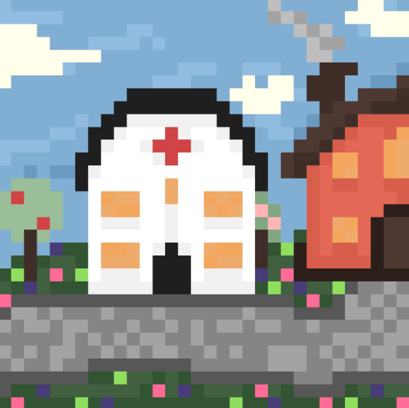

You open your front door and decide you should meet some of the townsfolk! You look left where there seems to be a dirt road leading towards a clearer road with some lights on either side, that must be the way into town. You start to walk along the path, taking in the smells of nature as you take a nice slow stroll. There are large, green fields on either side of you surrounded by woodland, the path then leads into the woods. After walking through the path into the woods for no more than 2 minutes, you suddenly find yourself in a small, humble village with brightly coloured buildings. You see what looks like a local shop, a local hospital, a town square with a town hall, a small pub, and a few houses with brightly coloured, decorated mailboxes in front of them. Every buildiing was beautifully decorated with arrays of flowers, small amounts of crops and fruit trees outside. You decide you should go to the local shop first to grab some food and introduce yourself.
You walk in and are immediately greeted by the middle aged, blond man behind the front counter. You give a little wave and examine the store. All around you are shelves stocked full of mostly fresh produce, but also branded names you recognise, which fills you with a slight bit of relief, you had no idea what there would be to eat here... You walk towards the man behind the front counter and introduce yourself, you tell him that you've just moved into the farm down the road, and he gives you a wide smile. He explains his name is Pierre, and he knew your grandparents when he was very young. You get chatting to him while you shop around for some basics to sustain yourself for a while. Pierre points to a shipping bin at the front of the store, and then to a shelf full of seeds. He explains that if you grow good quality crops, he will buy them from you. A way to earn a living here! Perfect!
You thank Pierre, pay for your items and walk out, you take another look around the small, colourful village that you now call home, reflecting on how good your new life will be...